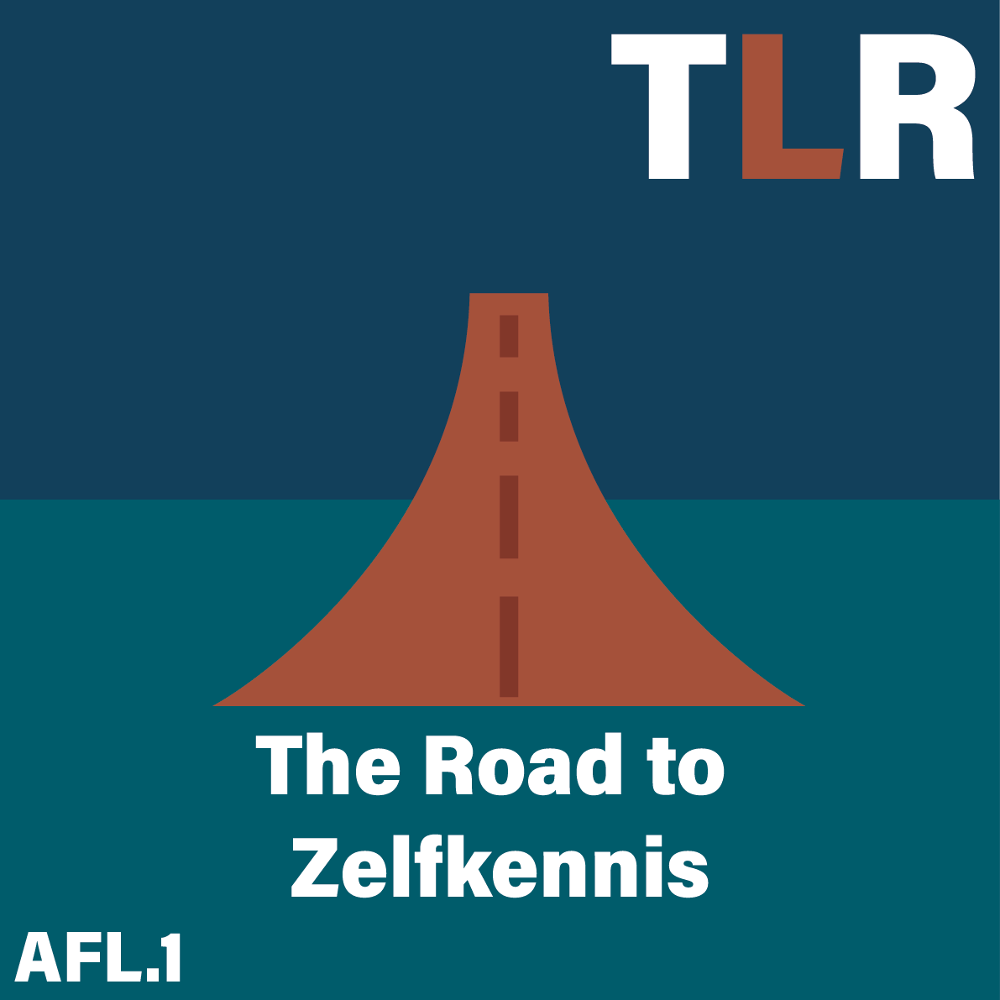

Afleveringen
-

S01 A06: Creativiteit: De sleutel tot zelfontplooiing
07/10/2024 - 53 min.
In deze aflevering van TheLifeRoad gaat het over hoe creativiteit kan helpen bij het leren kennen van jezelf en hoe je dit kan gebruiken om je zelf te verbeter om je best ik naar boven te halen.
-
S01 A05: Werk en geld: de sleutel tot jouw groei
30/09/2024 - 1u. 04 min.
In deze aflevering duiken Tion, Ruben en Luca dieper in het onderwerp werk en carrière. Hier geven ze tips over hoe je makkelijk gewoonte van werk en carrière kan verbeter om uiteindelijk er meer voldoening uit te halen.
-
S01 A04: Netwerken voor geluk
23/09/2024 - 58 min.
In deze aflevering van The Life Road word er besproken waarom sociale contacten van belang zijn voor jou eigen welzijn. Ontdek tips voor het verbeteren van je sociale kring en leer hoe goede verbindingen bijdragen aan persoonlijke groei.
-

S01 A03: Voeding en beweging: Hand in hand
16/09/2024 - 51 min.
In aflevering 3 van the Life Road gaan Tion, Luca en Ruben onderzoek doen naar effecten van voeding en beweging op de persoonlijke ontwikkeling en discipline. Leer hoe kleine aanpassingen in je dagelijkse routine grote positieve gevolgen kunnen hebben op je gezondheid.
-
S01 A02: Mentale welzijn in balans
09/09/2024 - 1u. 08 min.
In deze aflevering van The Life Road word samen met Thijs Launspach het belang van mentale gezondheid in verhouding tot persoonlijke groei besproken. Ook worden er strategieën gedeeld waardoor de stress aanzienlijk zal verminderen. Hierdoor zal de emotionele rust toekeren in uitdagende tijden.
-

S01 A01: ( The Life Road ) De eerste stap: zelfkennis
02/09/2024 - 57. min.
In deze intro aflevering nemen we je mee in de reis die je gaat volgen met onze podcast. De afleveringen zijn ingedeeld op basis van de piramide van Maslow. Verder geven we tips over hoe je zelfkennis kan vergaren door middel van reflectie, het herkennen van je gedachtengang en het analyseren van je gedrag.